Signs of the Times
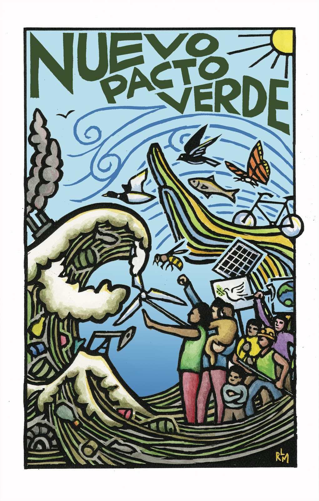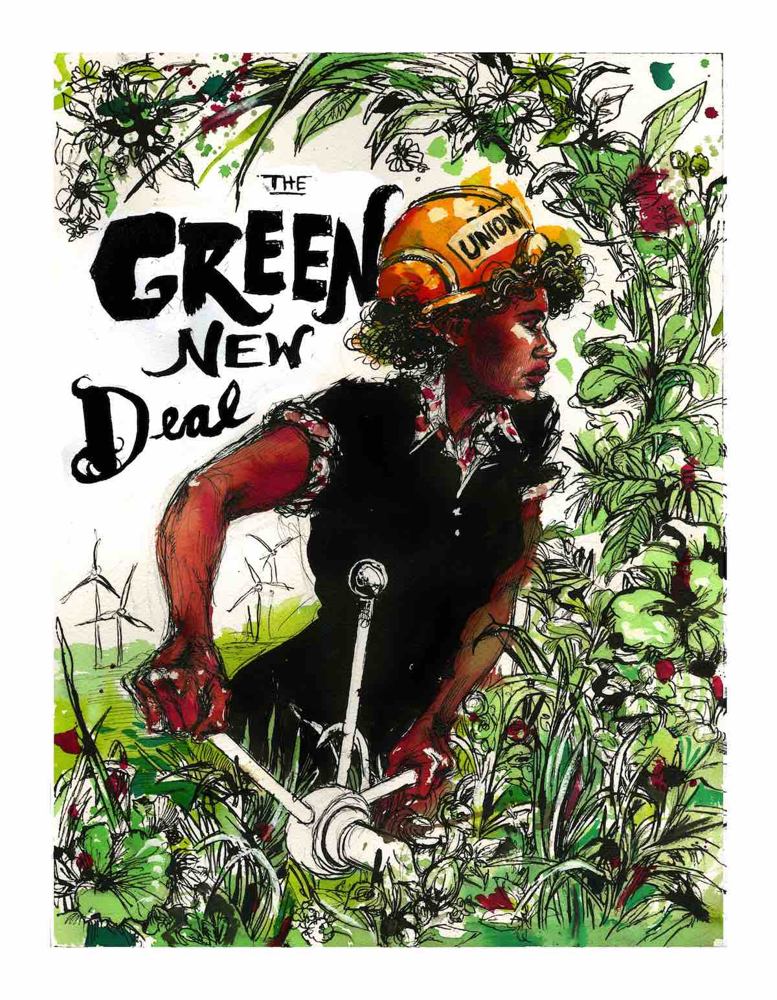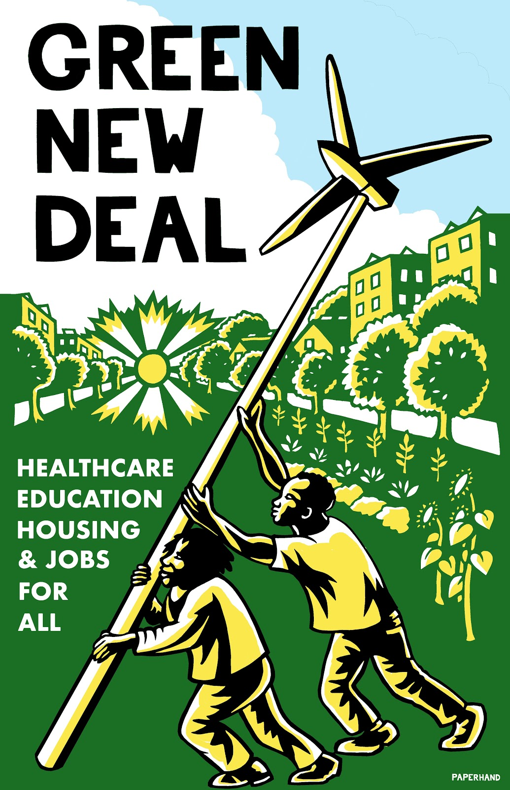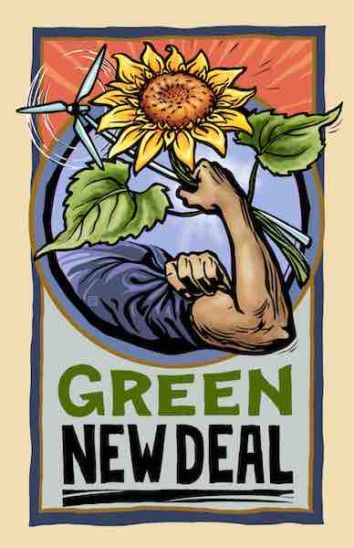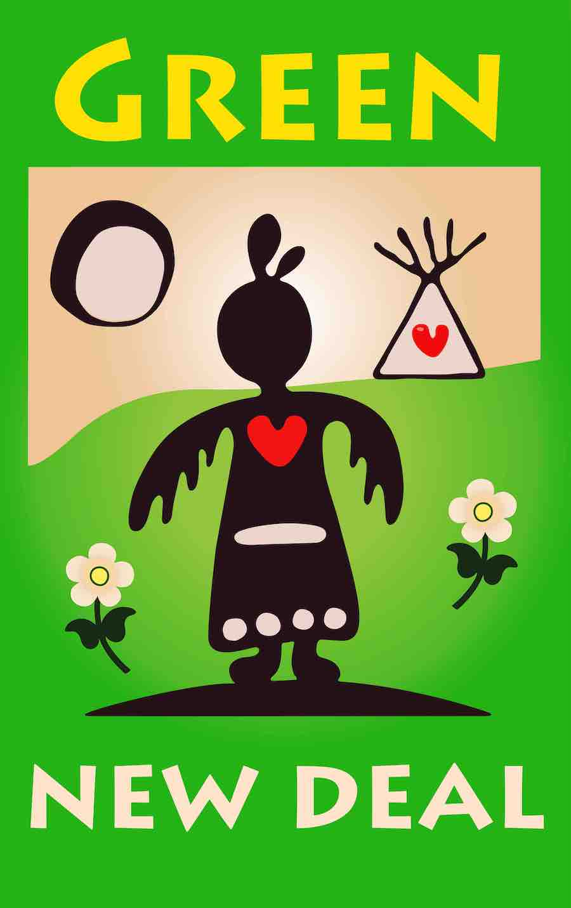We asked a handful of the most engaged artists in North America to create and share images that people can carry in the streets to help us organize for and win a Green New Deal. This Green New Deal Arts: Signs of the Times project is designed to support that fight.
In the battle of the story to win a Green New Deal, the arts may be our sharpest weapon. Ricardo Levins Morales writes, “Humans are story-driven. We make choices according to how we understand the world to be. Art speaks directly to those deep inner spaces where the stories are stored. I use art to support people’s ability to believe in possibilities that go beyond the boundaries that are acceptable to the rulers.”
At its most powerful, the Green New Deal is a practical, positive vision of a better world that we can unite our communities around. Molly Crababple says, “”We need more than dire warnings about the future. We need artists to create images of the better and more beautiful world we want to build.”
Isaac Murdoch, whose Thunderbird Woman and other designs have been carried into action at Standing Rock and across North American Indigenous and climate fights, writes “It is with great respect and dignity as artists that we share our visions and hearts to the world. The power of uniting people through art for change is no doubt one of the most important acts on the planet.”
“Any human power can be resisted and changed by human beings. Resistance and change often begin in art.” wrote Ursula Le Guin, when she received a National Book Foundation’s Medal for Distinguished Contribution to American Letters Award. Art plays a key role in current fights and victories for justice. Many of the recent teachers’ strike victories centered arts in their organizing; I worked with a team of artists with the Oakland, CA teachers union strike. In Hong Kong, creative movement posters rapidly flow in the streets and online. In Puerto Rico, murals and music played a role in forcing the resignation of Governor “Ricky” Rosselló. The Sunrise Movement has used well -designed visual art to powerfully demand a Climate Debate from Democractic Party leaders. As I write this, the #globalclimatestrike is about to kick off — the world’s biggest climate action involving millions everywhere — and the arts, hand painted signs and visual art, music, chants and song, theater, poetry and more–are being utilized heavily.
Art.350.org partnered with Labor Network for Sustainability (LNS), who are leading organized workers and communities in the fight for a Green New Deal. Singer-songwriter and LNS founding president Joe Uehlein says, “The writer Bertolt Brecht wrote, “Art is not a mirror held up to reality, but a hammer with which to shape it.” That is true, but only partly true. Art is both. Especially today, with our attention captured by fragmented soundbites and speeded-up attention-getters, it is really important to do things that invite contemplation and thoughtfulness. Art invites that. Art that reflects reality can push the right buttons in people that help them become hammers to shape it differently. Art can reflect reality and help people to become the hammers that shape reality in different ways. Ways that call into question the existing order of things – and suggest ways to change it.”
These images are tools to support organizing, and designed to be used in a lot of ways; you can make signs, create posters, screen print them on fabric or paper, print stickers, project them on walls at night, use them online, copy or print the black and white versions and hand color them with watercolors, colored pencils and markers. We offer some tools and resources on how you can use these and also hope they will encourage creation in your groups and community of your own images, songs, poems, dance, theater–with an eye toward being effective and winning.
~ David Solnit, Green New Deal Arts, Project Coordinator
Ricardo Levins Morales
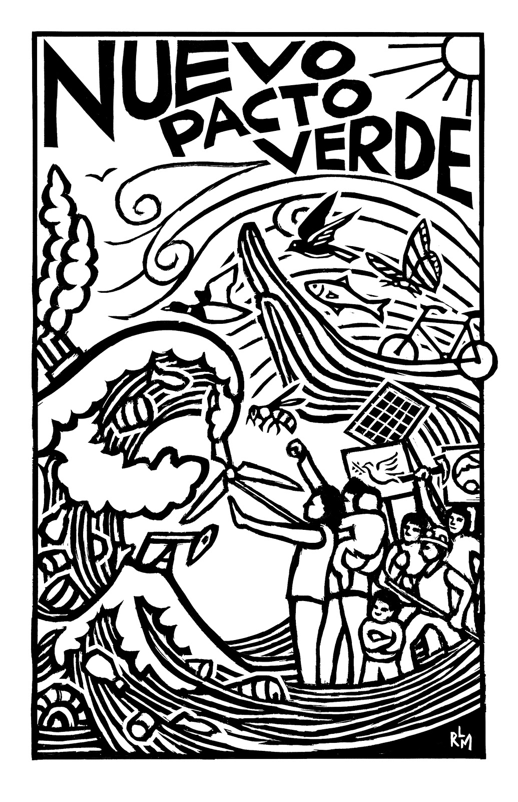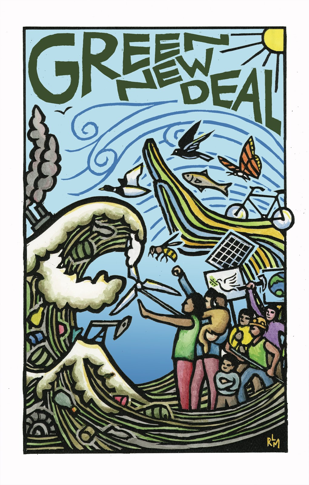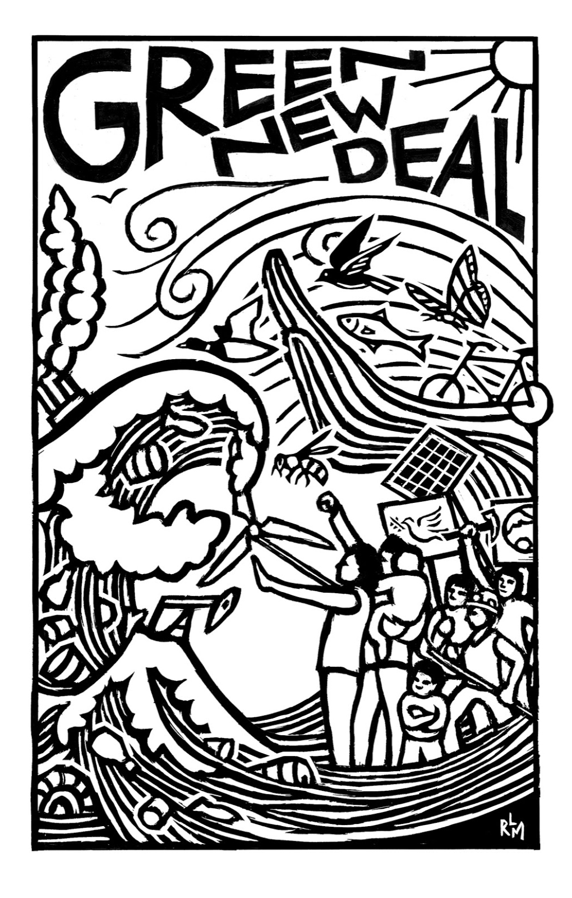Download Ricardo’s designs
A self-described “healer and trickster organizer disguised as an artist,” Ricardo sees his art and organizing practices as ways to address individual, collective and historical trauma. He grew up in Puerto Rico during the anti-colonial movement and moved with his family to Chicago in the 1960s. From there he combined his life-long passion for racial, labor and social justice movements into art. His art has won numerous awards and is widely reprinted and utilized by grassroots movements and communities as part of their efforts to improve their lives.
Ricardo says, “I became an artist, navigating the currents of mass social movements I got involved with as a young person. Anti-colonial struggle, labor and farmers rights, anti-racist and cultural activism have contributed to my understandings of art as a powerful dimension of organizing. Humans are story-driven. We make choices according to how we understand the world to be. Art speaks directly to those deep inner spaces where the stories are stored. I use art to support people’s ability to believe in possibilities that go beyond the boundaries that are acceptable to the rulers. This image illustrates the relationship among creating alternatives, aligning with nature and opposing the forces of oppression and destruction.”
Click here to download Ricardo’s Green New Deal designs.
You can also see more of Ricardo’s work on his website.
Molly Crabapple

Molly Crabapple is an artist and writer whose inspirations include Diego Rivera and Goya’s The Disasters of War. She is the illustrator of the popular Green New Deal video, A Message from the Future with Alexandria Ocasion Cortez, and author of Brothers of the Gun, an illustrated collaboration with Syrian war journalist Marwan Hisham, which was a NY Times Notable Book and long-listed for the 2018 National Book Award. Her memoir, Drawing Blood, received global praise and attention.
Crabapple’s reportage has been published in the New York Times, New York Review of Books, The Paris Review, Vanity Fair, The Guardian, and Rolling Stone. She got her start as a journalist sketching the frontlines of Occupy Wall Street, before covering, with words and art, Lebanese snipers, labor struggles in Abu Dhabi, Guantanamo Bay, the US border, America prisoners, Greek refugee camps, and the ravages of hurricane Maria in Puerto Rico. She once confronted Donald Trump in Dubai about exploitation of the workers building his golf courses.
“We need more than dire warnings about the future. We need artists to create images of the better and more beautiful world we want to build.”
“I was inspired by a photograph of a woman working in a factory during WWII. This twenty first century Rosie the Riveter harkens back to both the magnitude of the obstacles we have faced and our ability to overcome them”
Click here to download Molly’s Green New Deal designs.
You can see more of Molly’s work on her website.
Jan Burger, Paperhand Puppet Intervention
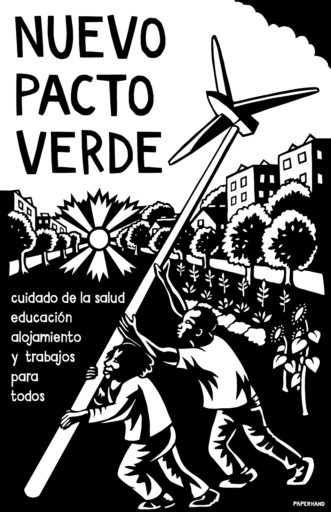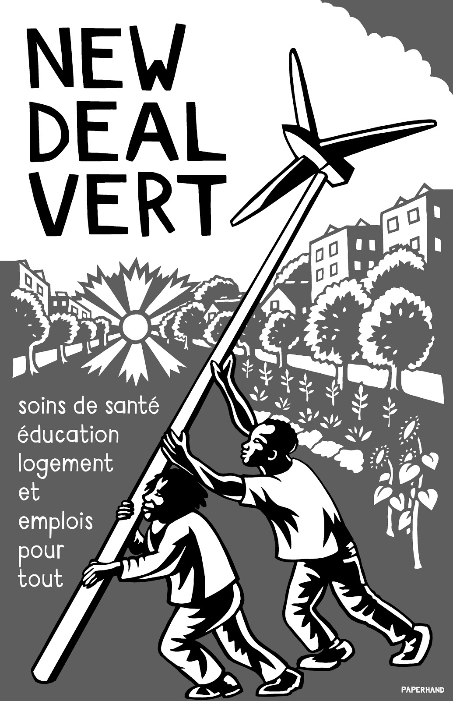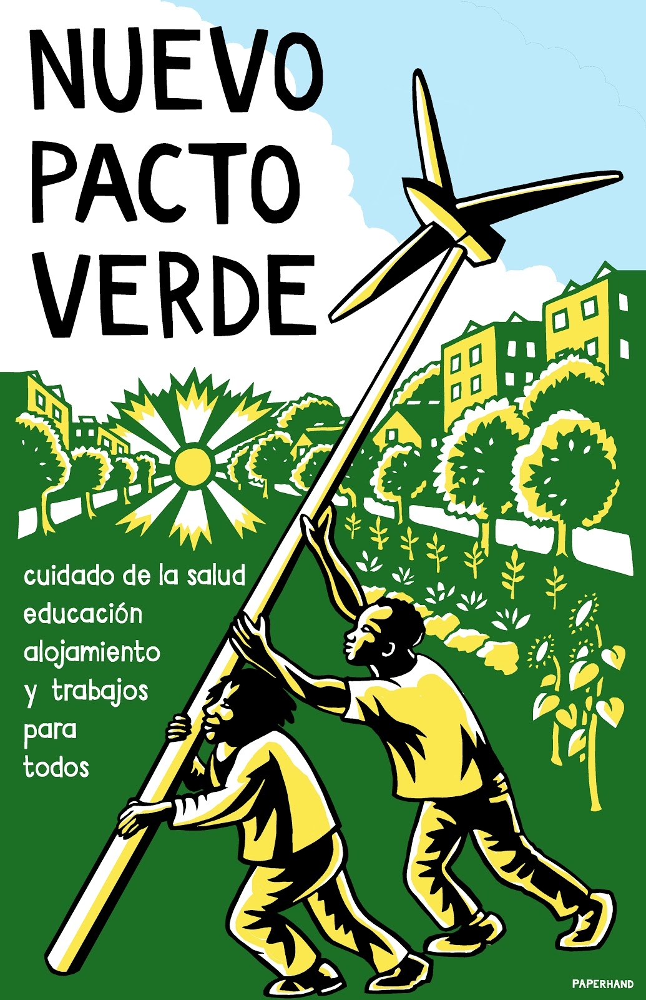Download Jan’s designs
Jan Burger is the cofounder of Paperhand Puppet Intervention in Saxapahaw, North Carolina. For 20 years each summer Paperhand has been creating pageants that advocate for the earth and it’s inhabitants. The shows include giant puppets, masks, stilt walkers and shadow puppets cut from paper.
Jan’s work has been focusing on disasters in his home state of North Carolina: fracked gas pipelines, coal ash spills, and deforestation from the wood pellet industry and from massive housing developments. The Green New Deal poster, cut from paper, shows an alternative vision. Healthy cities with self sufficient power, food production and trees.
Jan believes artists should be in the forefront of making change,”If we can inspire people with our beautiful actions then they may be motivated to act as well.”
Click here to download Jan’s Green New Deal designs.
You can see more of Jan’s work on his website.
Mona Caron
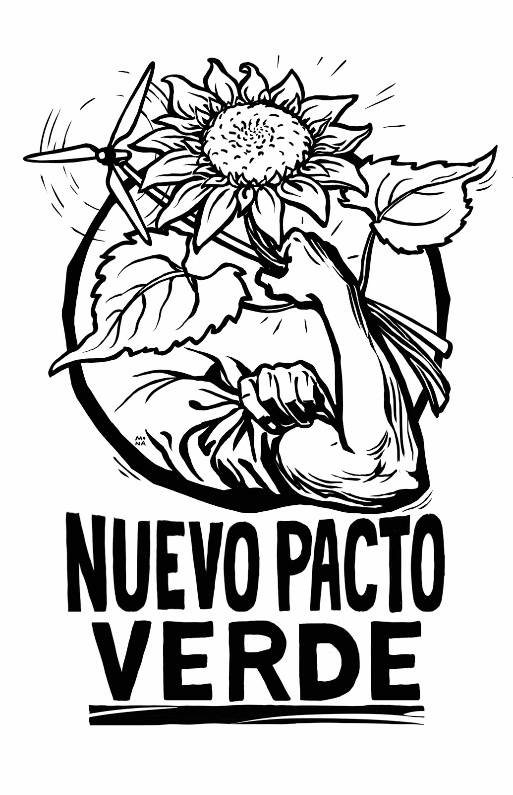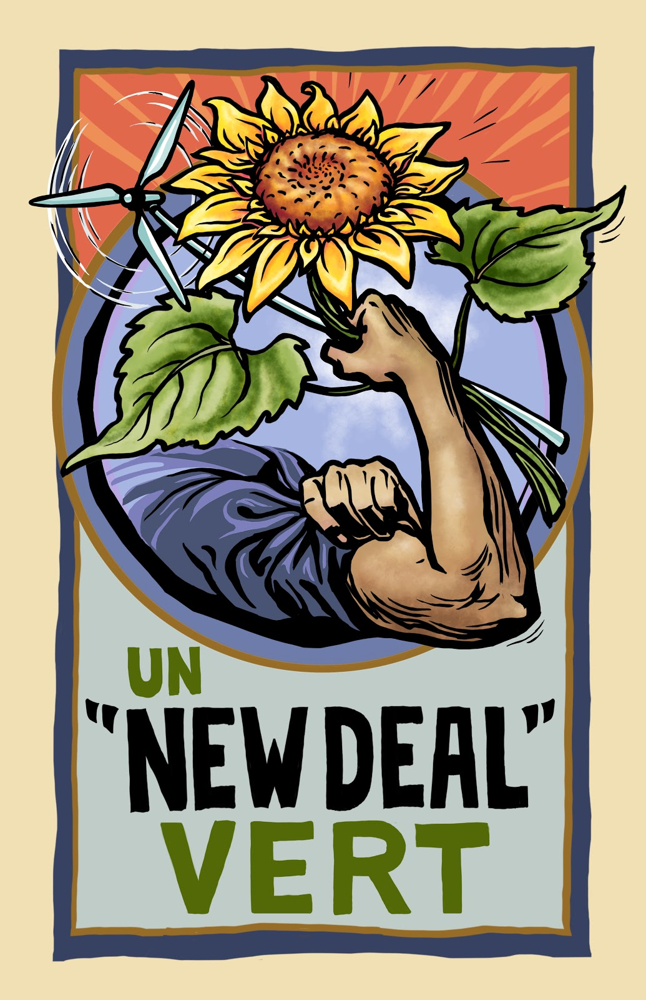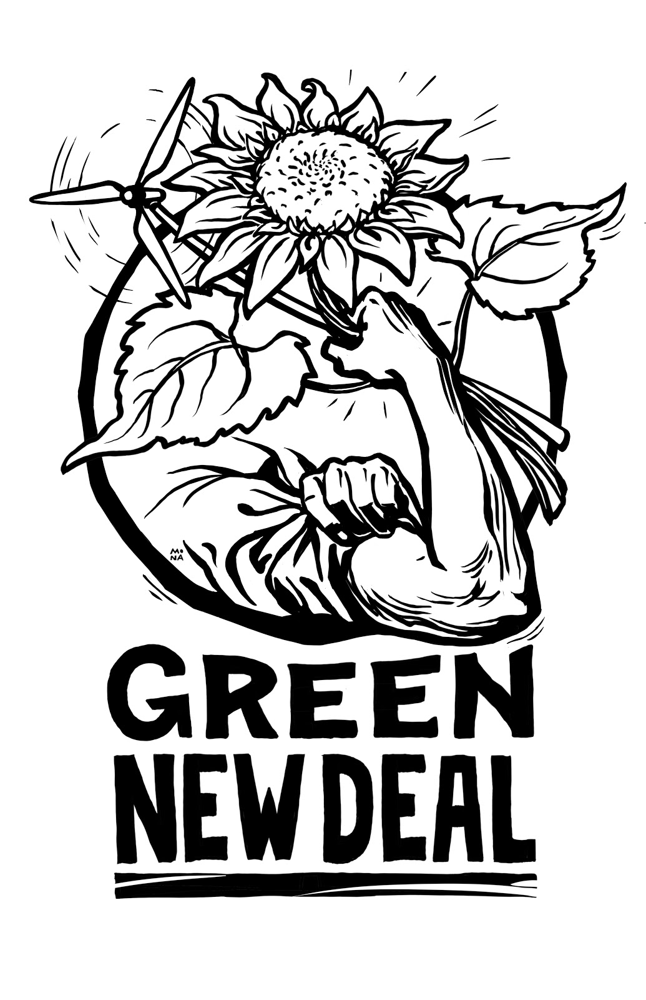Download Mona’s designs
Mona Caron is a San Francisco-based artist, using muralism, illustration and photography in both her art and artivism. Locally known for her trans-temporal murals of neighborhood history leading to collectively visioned radical transformations into positive futures, and known internationally for her botanical mural series titled ”Weeds”, a metaphor about resilience and resistance, Mona also creates art for street actions and graphics in accompaniment of social and environmental justice movements. Her art has been used in climate justice movements, water rights, and labor rights groups with organizations including 350.org, the Coalition of Immokalee Workers, Zero-waste Detroit, US Social forum, La Coordinadora por el Agua y la Vida and Fundación Abril of Cochabamba Bolivia, Land is Life and Acción Ecologica (Ecuador), as well as bicycle for transportation advocacy groups worldwide.
“This remix of the classic Rosie The Riveter image calling for a Green New Deal, implies that “we can do it!” – now as much as back then. It’s possible, it’s urgent, and we’re ready to roll up our sleeves.”
Click here to download Mona’s Green New Deal designs.
You can see more of Mona’s work on her website.
Isaac Murdoch
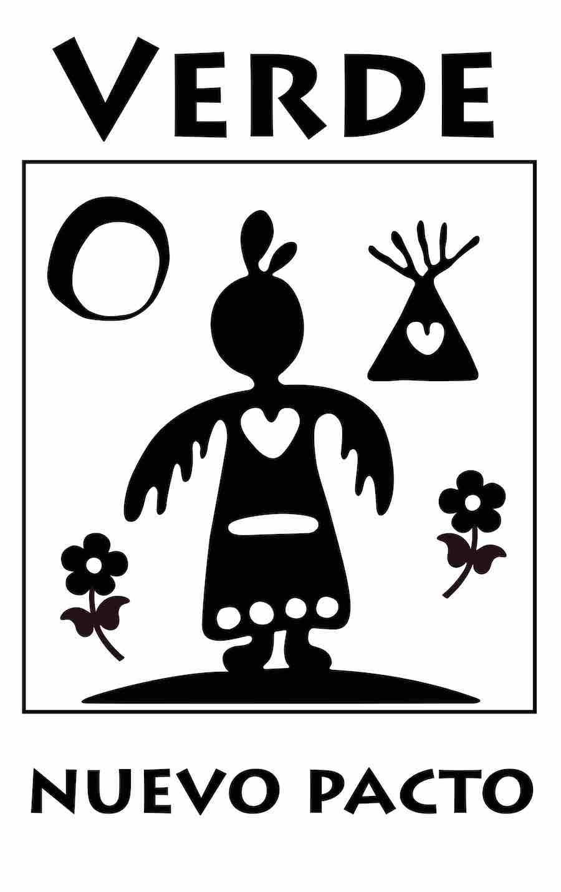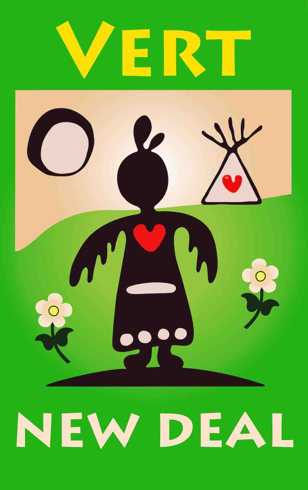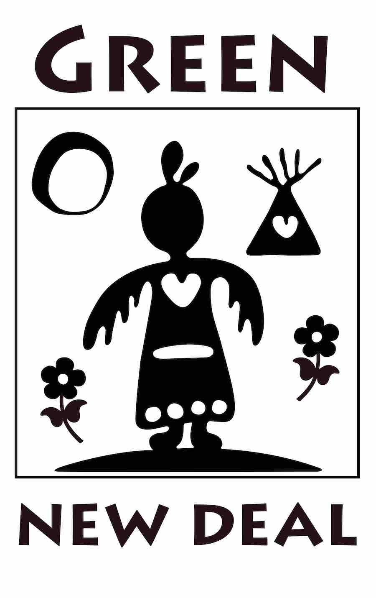Download Isaac’s designs
Isaac Murdoch, whose Ojibway name is Manzinapkinegego’anaabe / Bombgiizhik is from the fish clan and is from Serpent River First Nation. Isaac grew up in the traditional setting of hunting, fishing and trapping. Many of these years were spent learning from Elders in the northern regions of Alberta, Saskatchewan and Manitoba. Isaac is well respected as a storyteller and traditional knowledge holder.
For many years he has led various workshops and cultural camps that focuses on the transfer of knowledge to youth. Other areas of expertise include: traditional ojibway paint, imagery/symbolism, harvesting, medicine walks, & ceremonial knowledge, cultural camps, Anishinaabeg oral history, birch bark canoe making, birch bark scrolls, Youth & Elders workshops, etc. He has committed his life to the preservation of Anishinaabe cultural practices and has spent years learning directly from Elders. HIs designs have been used in actions with Indigenous, climate and environmental justice movements at Standing Rock and across North America.
“Since the beginning of human history, humans have used art as a way to communicate ideas, feelings, and spiritual messaging to each other, the natural world, and spiritual entities. For my tribe known as the Ojibwe, we believe that animals, plants, stars, and water communicates the same way using art. We believe the land and sky work together to collaborate art for all living things.
In a time of great environmental deficit, I believe art can be used as a medicine to help fix the social conscience to create change for the better. Art always has the last word while corporations use laws and policy to silence the majority for unethical resource extraction. Every amazing change for the better has always been triggered by art. It speaks loud and clear and always wins.
The image I created is called Thunderbird Child. She is half Thunderbird and half human. She was born on a mountain top and was raised by her parents to help save humanity from environmental destruction. She is a superhero and her power comes from her heart. She understands the power that children have and the medicine they carry, and she is focused. We will win.
It is with great respect and dignity as artists that we share our visions and hearts to the world. The power of uniting people through art for change is no doubt one of the most important acts on the planet.”
Click here to download Isaac’s Green New Deal designs.
You can see more of Isaac’s work on his website.
GREEN NEW DEAL ART-MAKING
Here are some resources on how to use these designs in your organizing and campaign, and other arts resources you can use.
- Tips for making signs from sign design downloads — here are tips on how you can use these designs to copy and make signs or posters for a Green New Deal
- Making Fabric Crossbar Signs — crossbar signs have sticks across the top and bottom. The above designs work for this process. The black and white designs can be screen printed, color can be added with hand painted washes using watered down acrylic or latex water-based paints
- Using Stencil Designs Downloads & How to Guide
- Shaped Cardboard Signs & Fabric Banners ― Art Tips for Activists — a helpful video guide.
- Banner painting with projections — a walk through of using a projector to make banner painting easy.
- How to Paint a Street Mural Guide as well as some examples (including the largest ever 5 block long street mural).
- Composing a stronger group photo — Planning a group photo of everyone and all your signs, art and visuals can often get the strongest image of the demonstration for your own photos and media as well.